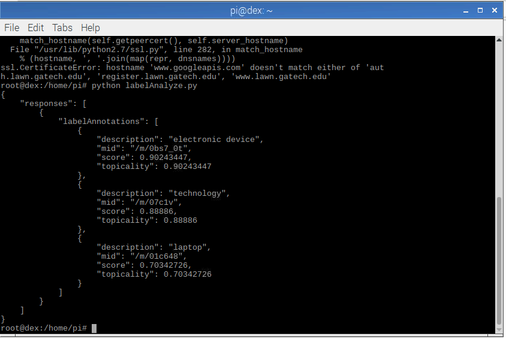
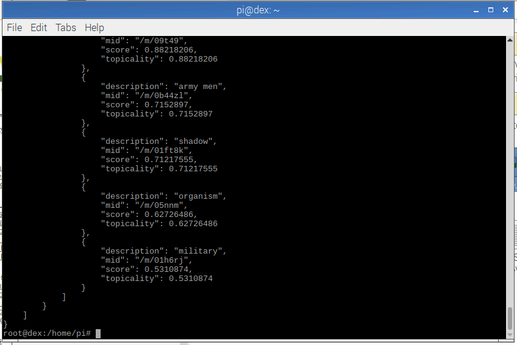
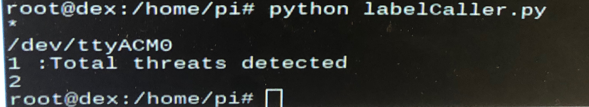

How did we get cross platform communication?
When working on this design problem we realized a few things. Since we are trying to incorporate both a raspberry pi and an mbed we would be dealing with two different programming languages. Essentially you would be running C++ on the mbed, but you would be running python on the Raspberry Pi. We chose the Raspberry Pi 3 (RPi 3) in order to give us the capability of analyzing pictures from the robot's point of view.
We would be doing all of the motor actuation from the mbed side and all of the visual processing from the RPi Camera on the RPi side. Therefore we had to write a code that wrote to the mbed from the RPi using a serial connection. As a result we had to install pySerial (link can be found here) on our RPi and leverage their libraries. Learning from lab 4 where we had to do a serial loopback between the RPi and the mbed we had to initialize the serial port of the mbed from the RPi side using "/dev/ttyACM0". Once this was initalized we could read and write to the mbed with the required methods.

How were we able to analyze things in our environment?
Originally we wanted to use Open CV to tag and follow objects throughout the room based on filtering them via the color masking option, however, installing OpenCV on the RPi 3 disabled the functionality of the camera, which defeated the main purpose as to why we wanted it on there in the first place. So we pivoted and used the Google Cloud Vision Api here instead. We used it's capability to label items in the image that it processes. Thankfully you receive a free trial and you are able to manipulate some of the tutorials they have. After doing some research we found a label tutorial that sent a label request to the console and would dump back the responses. There is an example of that happening below.
 After adding the necessary adjustments to the label requester it was able to parse for the particular keywords. Then it returned an identifying character only if a threat was found based off of those keywords and it returned a different character if there was no threat at all. This was edited so it could run on a continuous basis once it was initialized the first time. Therefore it is waiting for an input caused by the user from the bluetooth app.
How did we move the robot?
This was mostly done using the bluetooth module on the mbed side. We had another control method we thought about, but that will be detailed in troubleshooting. Currently the robot works by connecting with the user's smartphone using a predesigned Adafruit bluetooth GUI to actuate all of the different servos. We had two DC motors for forwards, backwards, and turning movement, and a pwm servo just for the camera mount movement.